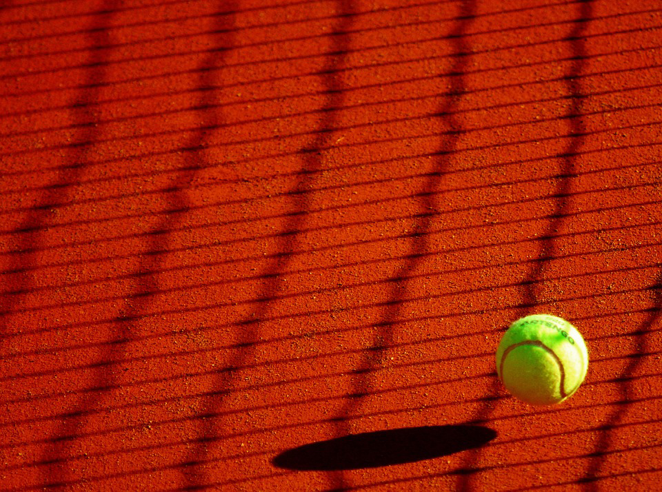

Sportsclubs in Heemstede
Getting to know a great city with great sportclubs
Getting to know a great city with great sportclubs
Heemstede formed around the Castle Heemstede that was built overlooking the Spaarne River around 1286.
Growth was slow, and in 1787 Heemstede counted 196 families. Even at that early date Heemstede had already gained the reputation it has today, of being primarily a "bedroom community" for the cities of Haarlem and Amsterdam. Wealthy city families left the cities in the summer, escaping "canal fever" which caused illness from the putrid canals.
In 1857, the municipality Berkenrode was merged with Heemstede. In 1927, the northern portion of Heemstede, including a large part of the Haarlem Forest, was in turn added to the city of Haarlem.
The town is served by Heemstede-Aerdenhout railway station, which lies on the Oude Lijn between Haarlem and Leiden.
It has an area of 9.64km2 and has 27.286 inhabitants
Lies next to the beatiful city of Haarlem as well as close to the capital of The Netherlands, Amsterdam
Rivierenbuurt is a neighbourhood of Amsterdam, Netherlands. The neighbourhood is situated in the eastern part of the borough of Amsterdam-Zuid, bordered by the river Amstel to the east, the Boerenwetering canal in the west, the Amstelkanaal in the north and the A10 motorway in the south. In 2013, the Rivierenbuurt had approximately 28,400 residents. The Rivierenbuurt was built in the 1920s as a primarily middle-class residential area, part of the Plan Zuid urban expansion programme designed by Dutch architect Hendrik Petrus Berlage. The neighbourhood features many fine examples of Amsterdam School architecture. The Dutch word Rivierenbuurt translates as 'Rivers Neighbourhood', which refers to the fact that most streets in the area are named after rivers in the Netherlands.
Until World War II the area had a sizable Jewish population which included Anne Frank and her family, who lived at Merwedeplein square until they went into hiding in the secret annex located in the old city centre.
The neighbourhood is served by tram routes 4 and 12, bus routes 62 and 65, as well as Amsterdam metro and national rail services from Amstel Station and Zuid Station.
Today, the Rivierenbuurt is changing rapidly. Offices, schools, shops, homes and the largest hotel in the Benelux are being built in the Zuidas district. The RAI Amsterdam convention centre is expanding, and the Noord/Zuid metro line will increase visitor numbers even further.
Close to the city of Haarlem and to the capital of The Netherlands, Amsterdam where they offer tours around the city in boat and has become a very turistical city. Also 30 minutes on train to the political capital of The Netherlands in The Hague where you can visit another beatiful city and see the court of justice.
Rivierenbuurt also contains a wide variety of bars and restaurants to go such as Tap Zuid, Bar Bouwmeester and Cafe Blek. The city is not shy of good food and good drinks and has an active night life
Finally, it is surrounded by water which makes boat tours and touristic tours a pleasure to embark on even as a local it is something everyone does once to say the least!
| Club Name | Club Info | Image |
|---|---|---|
| Tennis HBC | Tennis club HBC is a recreational club from Heemstede where cosiness and sportiness are of paramount importance. There are Fun Tennis nights organized by young seniors and 7 aritifical grass courts with LED Lightning | |
| Tennisvereniging Merlenhove | Tennis club with students, senior members and junior members where training is available as well as fields to play | |
| HLTC | Tennis club founded in 1885. Profesional and amateur play and training. Field rental available. | |
| LTC | LTC is a tennis club with a social and pleasant character. The tennis park borders the Bosch en Vaart district and is easily accessible. You can park for free next to the park. | |
| Tennis & Squash Overhout | Offers membership as well as fields. All-weather courts available and also has squash fields. | |
| Tennisvereniging Smash | Smash is a tennis club for members with an intellectual disability. It is the only independent tennis club in the Netherlands for people from this target group. . | |
| Apollo Tennis Organization (ATO) | Indoor tennis fields. Membership available and rental of fields for a match or a season. | |
| T.V.Vijfhuizen | Tennis club since 1969. Membership available. Amateur play and professional. Fields for rental as well. | |
| KSP | Club that offers different sports to train. Basketball training membership available and fields to rent too. |  |
| BC Triple Threat | Indoors basketball training and amateur team. Membership available and competitively active every season. |  |